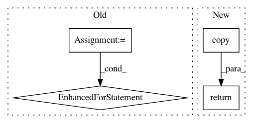

8830dc5b81b4b0f8d8080fb60cc4196b5752891e,python/caffe/pycaffe.py,,_Net_deprocess,#,278
Before Change
Invert Caffe formatting; see Net.preprocess().
decaf_inputs = []
for in_ in inputs:
decaf_in = in_.squeeze()
input_scale = self.input_scale.get(input_name)
channel_order = self.channel_swap.get(input_name)
mean = self.mean.get(input_name)
if mean is not None:
decaf_in += mean
decaf_in = decaf_in.transpose((1,2,0))
if channel_order:
decaf_in = decaf_in[:, :, channel_order[::-1]]
if input_scale:
decaf_in /= input_scale
decaf_inputs.append(decaf_in)
return np.asarray(decaf_inputs)
def _Net_set_input_arrays(self, data, labels):
After Change
Invert Caffe formatting; see Net.preprocess().
decaf_in = input_.copy().squeeze()
input_scale = self.input_scale.get(input_name)
channel_order = self.channel_swap.get(input_name)
mean = self.mean.get(input_name)
if mean is not None:
decaf_in += mean
decaf_in = decaf_in.transpose((1,2,0))
if channel_order:
decaf_in = decaf_in[:, :, channel_order[::-1]]
if input_scale:
decaf_in /= input_scale
return decaf_in
def _Net_set_input_arrays(self, data, labels):
In pattern: SUPERPATTERN
Frequency: 3
Non-data size: 4
Instances
Project Name: BVLC/caffe
Commit Name: 8830dc5b81b4b0f8d8080fb60cc4196b5752891e
Time: 2014-05-20
Author: shelhamer@imaginarynumber.net
File Name: python/caffe/pycaffe.py
Class Name:
Method Name: _Net_deprocess
Project Name: ina-foss/inaSpeechSegmenter
Commit Name: 4396573e860d553825702006aa335989356b45c8
Time: 2020-05-10
Author: ddoukhan@ina.fr
File Name: inaSpeechSegmenter/segmenter.py
Class Name: Segmenter
Method Name: batch_process
Project Name: rasbt/mlxtend
Commit Name: f4a5be4f4a404c30c9acaac2c2e691021d4715b0
Time: 2015-12-10
Author: mail@sebastianraschka.com
File Name: mlxtend/preprocessing/mean_centering.py
Class Name: MeanCenterer
Method Name: transform